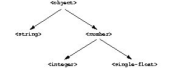

3.2.1 Class inheritance
One important aspect of classes is that they are related to one another by inheritance. Inheritance enables classes that are logically related to one another to share the behaviors and attributes that they have in common. Each class inherits from one or more classes, called its superclasses. If no other class is appropriate, then the class inherits from the class <object>. This class is the root of all classes: All classes inherit from it, either directly or indirectly, and it does not have any direct superclasses.
Comparison with C++: If you are familiar with the class concepts of C++, you might initially be confused by Dylan's class model. In Dylan, all base classes are effectively virtual base classes with "virtual" data members. When a class inherits another class more than once (because of multiple inheritance), only a single copy of that base class is included. Each of the multiple-inheritance paths can contribute to the implementation of the derived class. The Dylan class model favors this mix-in style of programming. For more information, see Section B.2 in Appendix B, Dylan Object Model for C and C++ Programmers. |
In Dylan, we distinguish between two terms: direct instance and general instance. An object is a direct instance of exactly one class: the class that object-class returns for that object. An object is a general instance of its direct class, and of all classes from which its direct class inherits. The term instance is equivalent to general instance. You can use the instance? predicate to ask whether an object is an instance of a given class:
? instance?(1000, <integer>); #t ? instance?("hello, world", <integer>); #f
All objects are instances of the class <object>:
? instance?(1000, <object>);
#t
? instance?("hello, world", <object>);
#t
Figure 3.2 shows the inheritance relationships among several of the built-in classes. If class A is a superclass of class B, then class B is a subclass of class A. For example, <object> is a superclass of <string>, and <string> is a subclass of <object>. For simplicity, Figure 3.2 omits certain classes that intervene between the classes shown.
 |
A typical Dylan environment provides a browser to explore inheritance relationships among classes; certain environments show the relationships graphically.
The Dylan language includes functions that provide information about the inheritance relationships among classes. We can use subtype? to ask whether one class inherits from another class:
? subtype?(<integer>, <number>); #t ? subtype?(<integer>, <object>); #t ? subtype?(<single-float>, <object>); #t ? subtype?(<string>, <integer>); #f
It may be confusing that we use a function called subtype? here, but Dylan does not provide a function called subclass?. Every class is a type, but certain types are not classes (see Section 9.1, page 109). The subtype? function works for both classes and other types.
We can ask for all the superclasses of a given class:
? all-superclasses(<string>); #[{class <string>}, {class <mutable-sequence>}, {class <sequence>}, {class <mutable-collection>}, {class <collection>}, {class <object>}] ? all-superclasses(<integer>); #[{class <integer>}, {class <rational>}, {class <real>}, {class <number>}, {class <object>}] ? all-superclasses(<single-float>); #[{class <single-float>}, {class <float>}, {class <real>}, {class <number>}, {class <object>}]
The all-superclasses function returns a vector containing the class itself and all that class's superclasses. The #[...] syntax represents a vector, which is a one-dimensional array. (For information about vectors, see Chapter 11, Collections and Control Flow.)